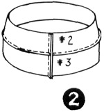
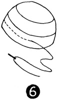

1952—How to Make Hats
by Ruby Carnahan
 Fabric Hat with Three-Piece Sectional
Crown, Plain or Draped Brim
Fabric Hat with Three-Piece Sectional
Crown, Plain or Draped Brim

Trace pattern on page 78-79
Place each piece of pattern on fold of paper and cut double.
MATERIAL REQUIRED
- 1 yd. wool
- 3/4 yd. crinoline.
- 3/4 yd. soft taffeta
- 1 bicycle clip
- 1/2 yd. blocking felt
- 3/4 yd. headband ribbon.
- 12 rings
CRINOLINE FOUNDATION
Mark around pattern on crinoline. Mark notches on crinoline and cut out.
(Illus. 1) Match notches on pieces 2 and 3 and baste together. Stitch on machine. (Illus. 2) Join pieces together with seam in back. (Illus. 3) Match markings on pieces 1 and 2, baste together and stitch. (Illus. 4) Place crinoline foundation on correct head-size utility block. (Illus. 5) Steam and pull foundation down to fit block. Pin foundation to block around the bottom and let dry.
MAKING CROWN OF FABRIC
Cut and sew fabric same as above. Baste each side of seams down flat and stitch on machine. Place crown on utility block wrong side out. Steam press seams and pin around bottom of crown to block and let dry. (Illus. 6)
Slip fabric crown over crinoline foundation and baste together. Place crown on block and measure desired depth of crown from back to front and from side to side. (Illus. 7) Mark depth around crown with a basting thread. Cut off excess material 1/2" below this mark.
DRAPED BRIM
The above crown may be used with a brim of elastic net covered with the same fabric. Cut a bias strip of elastic net, 8" x 36", and fold in half lengthwise. Pin and drape this strip around utility block until you have desired brim style, then steam elastic net to keep shape and allow to dry. Mark front of brim. Pin elastic net brim and crown together and try on, making any necessary adjustments on brim. Remove elastic net brim from crown. Lay elastic net brim on material and cut material to correspond with elastic net. Baste material and elastic net together. Fold brim back into shape and pin to utility block. Slip crown on block over brim. Match markings on crown and brim and pin together. Sew around headsize. Make lining from same crown pattern and slip inside crown. Finish around headsize with a swirled ribbon headband. (Illus. 8). (Illus. 9).